library(tidyverse)
library(sf)Working with geometries in sf objects
The sf package provides a large set of functions to operate on the geometries of sf objects. This chapter covers the most useful ones, organised by what they do:
- Validity: checking and fixing geometry problems.
- Generators: creating new geometries from existing ones (buffers, centroids, hulls, grids, type casting, set operations).
- Simplification: reducing geometric complexity.
- Measurements: areas, lengths, and distances.
- Aggregation: dissolving and combining features.
- Attribute-geometry relationships: understanding what happens to attributes when geometries change.
We will use the Nephrops functional units as our main example dataset throughout, projected to World Mercator for accurate distance and area calculations:
nfu <- read_sf("./data/nephrops_fu.gpkg") |>
st_transform(3395)
ImportantAlways use projected data for geometric operations
Geometric operations (areas, distances, buffers) require planar (Cartesian) coordinates. Geographic coordinates (latitude/longitude) will produce wrong results — areas in square degrees, distances in degrees, and distorted buffers. Use st_is_longlat(x) to check, and st_transform(x, crs) to reproject. See the CRS chapter for guidance on choosing an appropriate projection.
Validity
Real-world spatial data frequently contains geometry errors: self-intersecting polygons, duplicate vertices, rings that don’t close properly. These cause cryptic errors in spatial operations. It is good practice to check validity before doing any analysis.
st_is_valid(nfu) # Is each geometry valid? [1] TRUE TRUE TRUE TRUE TRUE TRUE TRUE TRUE TRUE TRUE TRUE TRUE TRUE TRUE TRUE
[16] TRUE TRUE TRUE TRUE TRUE TRUE TRUE TRUE TRUE TRUE TRUE TRUE TRUE TRUE TRUEst_is_simple(nfu) # Is each geometry simple (no self-intersections)? [1] TRUE TRUE TRUE TRUE TRUE TRUE TRUE TRUE TRUE TRUE TRUE TRUE TRUE TRUE TRUE
[16] TRUE TRUE TRUE TRUE TRUE TRUE TRUE TRUE TRUE TRUE TRUE TRUE TRUE TRUE TRUEst_is_empty(nfu) # Are any geometries empty? [1] FALSE FALSE FALSE FALSE FALSE FALSE FALSE FALSE FALSE FALSE FALSE FALSE
[13] FALSE FALSE FALSE FALSE FALSE FALSE FALSE FALSE FALSE FALSE FALSE FALSE
[25] FALSE FALSE FALSE FALSE FALSE FALSEIf geometries are invalid, st_make_valid() attempts to repair them automatically:
nfu_fixed <- st_make_valid(nfu)
all(st_is_valid(nfu_fixed))[1] TRUE
Tip
It is good practice to run st_make_valid() on any spatial data you read from an external source before doing operations on it, especially if the data comes from a shapefile or an older GIS system.
Generating new geometries
Sampling
st_sample() generates random points within polygons or along linestrings. The result is an sfc object (a geometry column without attributes). Use st_as_sf() to convert it to a full sf object if you need to attach data.
set.seed(100)
# Random points within polygons
pts1 <- st_sample(nfu, size = 100, type = "random")
# Random points along the boundary of polygons
nfu_lines <- st_cast(nfu, "MULTILINESTRING")
pts2 <- st_sample(nfu_lines, size = 100, type = "random")
ggplot() +
geom_sf(data = nfu, fill = "grey90") +
geom_sf(data = pts1, colour = "red", size = 0.8) +
geom_sf(data = pts2, colour = "blue", size = 0.8) +
labs(title = "Random points inside (red) and on boundary of (blue) polygons") +
theme_bw()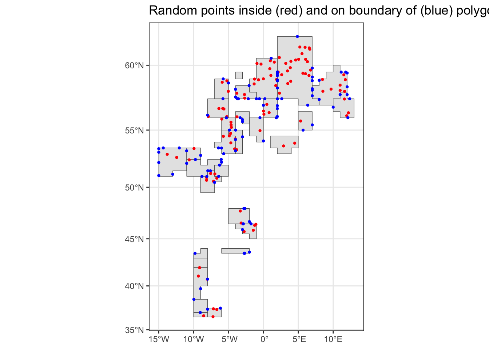
Centroids
st_centroid() returns the geometric centre of each feature. For irregular or concave polygons the centroid can fall outside the polygon itself. st_point_on_surface() guarantees a point that is always inside (or on the boundary of) the polygon, which is often more useful for labelling.
centr <- st_centroid(nfu)
centr2 <- st_point_on_surface(nfu)
ggplot() +
geom_sf(data = nfu, fill = "grey90") +
geom_sf(data = centr, colour = "red", size = 2) +
geom_sf(data = centr2, colour = "blue", size = 2, shape = 17) +
labs(title = "Centroids (red circles) vs point on surface (blue triangles)") +
theme_bw()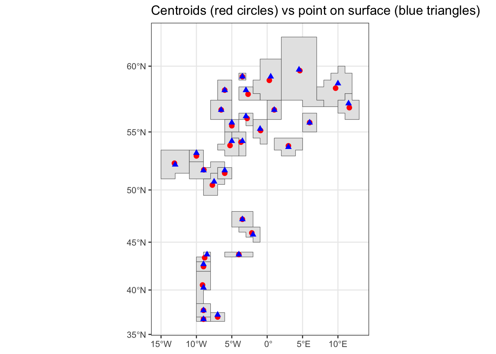
Buffers
st_buffer() creates a zone around a geometry at a given distance (in the units of the CRS — metres for most projected CRS). It works on points, lines, and polygons.
# Buffer around points: creates circles
buf_pts <- st_buffer(pts1, dist = 100000) # 100 km
ggplot() +
geom_sf(data = buf_pts, linetype = "dashed", fill = NA) +
geom_sf(data = pts1, colour = "red") +
theme_bw()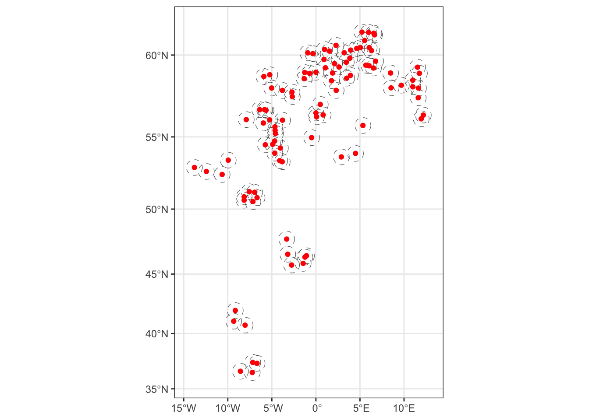
# Buffer around lines: creates a corridor
buf_lines <- st_buffer(nfu_lines, dist = 50000) # 50 km either side
ggplot() +
geom_sf(data = buf_lines, aes(fill = name), alpha = 0.5) +
geom_sf(data = nfu, fill = NA, colour = "black") +
theme_bw()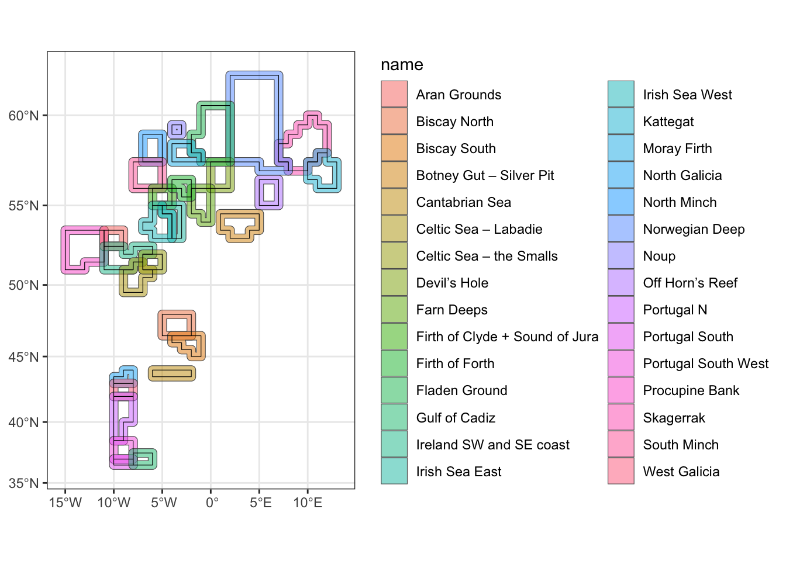
# Buffer around polygons: expands the polygon outward
buf_poly <- st_buffer(nfu, dist = 20000) # 20 km outward
ggplot() +
geom_sf(data = buf_poly, aes(fill = name), alpha = 0.4) +
geom_sf(data = nfu, fill = NA, colour = "black") +
theme_bw()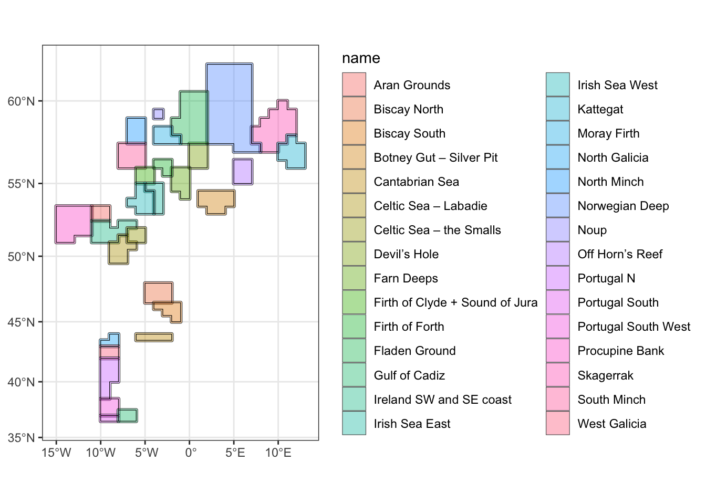
# Negative buffers shrink a polygon inward (only valid for polygons)
buf_neg <- st_buffer(nfu, dist = -20000) # 20 km inward
ggplot() +
geom_sf(data = nfu, fill = "grey90") +
geom_sf(data = buf_neg, aes(fill = name), alpha = 0.6) +
theme_bw()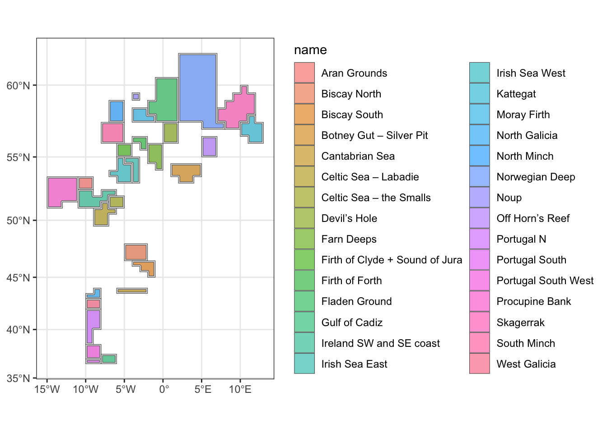
Convex and concave hulls
A convex hull is the smallest convex polygon that encloses a set of points — think of stretching a rubber band around the outermost points. To get a single hull for a set of points, first union them into a MULTIPOINT with st_union(), then apply st_convex_hull().
pts1_u <- st_union(pts1) # Combine into a single MULTIPOINT
chull <- st_convex_hull(pts1_u)
ggplot() +
geom_sf(data = chull, fill = "lightblue", alpha = 0.5) +
geom_sf(data = pts1, colour = "red", size = 0.8) +
theme_bw()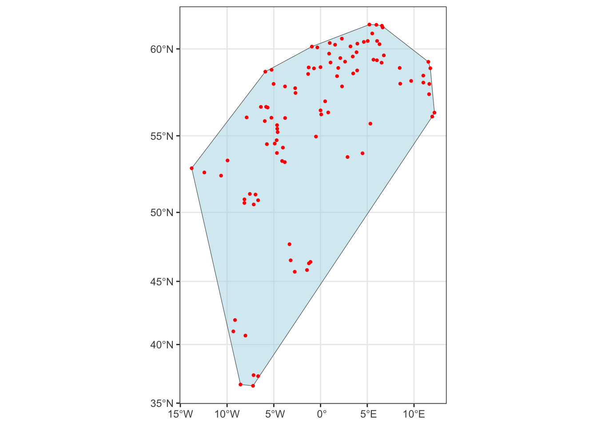
Note
st_union() is also used more generally to dissolve internal boundaries between polygons (merging multiple polygons into one) and to cluster individual points into a MULTIPOINT geometry. Without calling st_union() first, st_convex_hull() would return a degenerate “hull” for each individual point.
A concave hull fits more tightly around a point cloud, following the actual shape of the data rather than just the outermost extent. Modern sf (version 1.0-14 and later) includes st_concave_hull() directly:
# ratio controls how tight the hull is (0 = very tight, 1 = convex hull)
conc1 <- st_concave_hull(pts1_u, ratio = 0.1)
conc2 <- st_concave_hull(pts1_u, ratio = 0.5)
ggplot() +
geom_sf(data = chull, colour = "black", fill = NA, linetype = "dashed") +
geom_sf(data = conc2, colour = "blue", fill = NA) +
geom_sf(data = conc1, colour = "red", fill = NA) +
geom_sf(data = pts1, size = 0.8) +
labs(title = "Convex hull (dashed), concave ratio=0.5 (blue), ratio=0.1 (red)") +
theme_bw()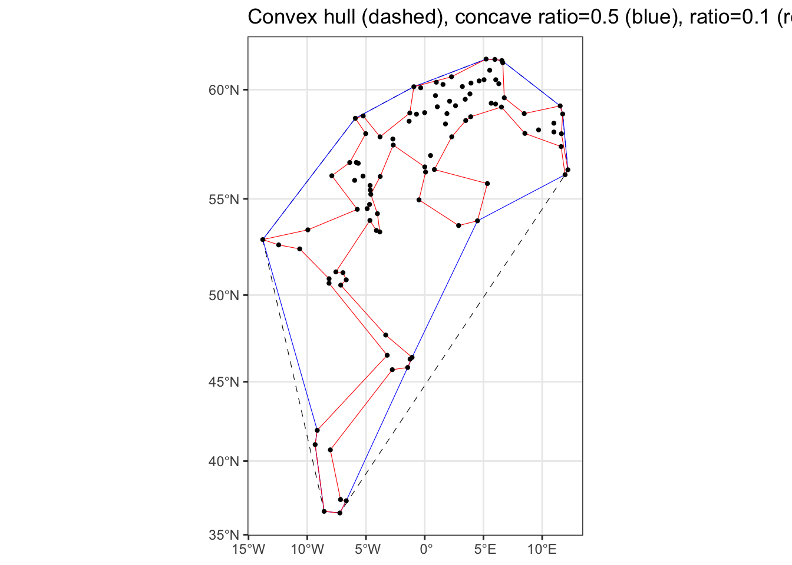
Grids
st_make_grid() creates rectangular or hexagonal grids over the extent of an sf object. Hexagonal grids are increasingly popular for spatial analysis because each cell has equal distance to all its neighbours.
sq_grid <- st_make_grid(nfu, n = c(10, 15))
hex_grid <- st_make_grid(nfu, n = c(10, 15), square = FALSE)
ggplot() +
geom_sf(data = sq_grid, fill = NA, colour = "grey60") +
geom_sf(data = hex_grid, fill = NA, colour = "red", alpha = 0.5) +
geom_sf(data = nfu, fill = NA, colour = "black") +
theme_bw()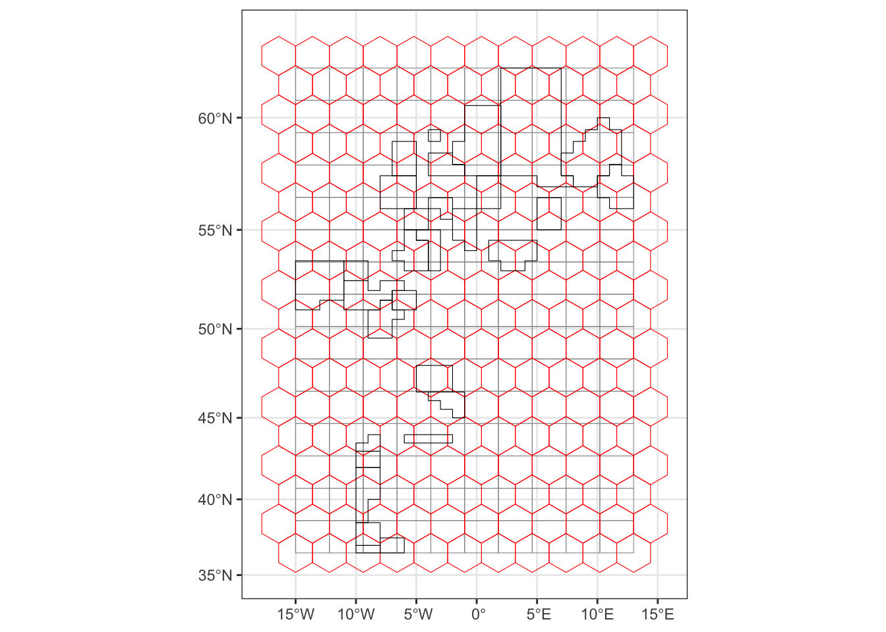
To get just the bounding box of an sf object as a polygon, use st_as_sfc() on the bounding box:
bbox_poly <- st_as_sfc(st_bbox(nfu))
ggplot() +
geom_sf(data = bbox_poly, fill = NA, colour = "red", linetype = "dashed") +
geom_sf(data = nfu, fill = "grey90") +
theme_bw()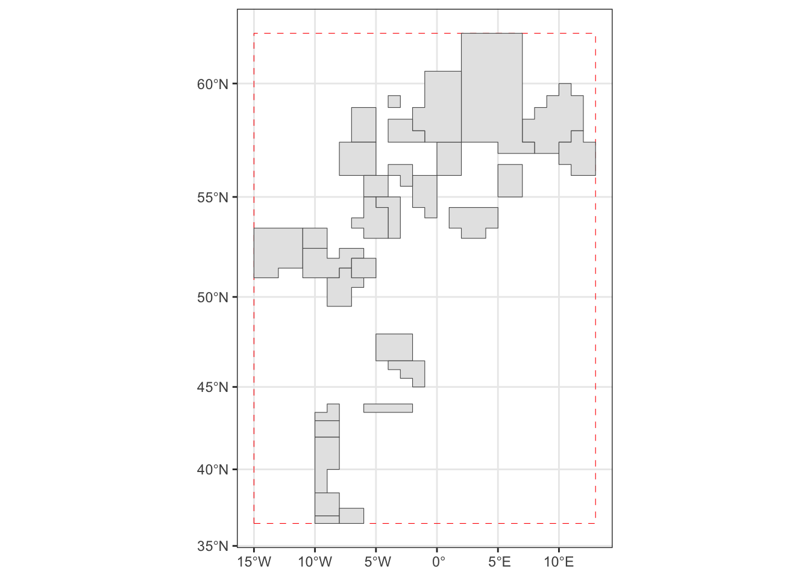
Geometry type casting
st_cast() converts geometries from one type to another. Common uses include converting POLYGON to LINESTRING (to get the boundary as a line), splitting MULTIPOLYGON into individual POLYGONs, or combining POINTs into a LINESTRING for a track.
# Convert polygons to their boundary lines
nfu_lines <- st_cast(nfu, "MULTILINESTRING")
st_geometry_type(nfu_lines) [1] MULTILINESTRING MULTILINESTRING MULTILINESTRING MULTILINESTRING
[5] MULTILINESTRING MULTILINESTRING MULTILINESTRING MULTILINESTRING
[9] MULTILINESTRING MULTILINESTRING MULTILINESTRING MULTILINESTRING
[13] MULTILINESTRING MULTILINESTRING MULTILINESTRING MULTILINESTRING
[17] MULTILINESTRING MULTILINESTRING MULTILINESTRING MULTILINESTRING
[21] MULTILINESTRING MULTILINESTRING MULTILINESTRING MULTILINESTRING
[25] MULTILINESTRING MULTILINESTRING MULTILINESTRING MULTILINESTRING
[29] MULTILINESTRING MULTILINESTRING
18 Levels: GEOMETRY POINT LINESTRING POLYGON MULTIPOINT ... TRIANGLE# Split MULTIPOLYGON features into individual POLYGONs
# (warning: this duplicates attribute rows for each part)
nfu_poly <- st_cast(nfu, "POLYGON")
nrow(nfu) # Original number of features[1] 30nrow(nfu_poly) # May be more if any features are multipart[1] 30
WarningCasting from MULTI to single geometry types
When casting from MULTIPOLYGON to POLYGON (or MULTILINESTRING to LINESTRING, etc.), each part of a multi-geometry becomes a separate row. Attribute values are duplicated across all resulting rows. Be careful when doing this before area or length calculations, as you may end up double-counting.
Set operations on geometries
These binary operations take two sf objects and return new geometries based on their spatial relationship. They are among the most powerful tools in sf.
# Load a second polygon layer to work with
ices_er <- read_sf("./data/ices_ecoregions.gpkg") |>
st_transform(3395)
# Select just a couple of areas to keep examples clear
north_sea <- ices_er |> filter(ecoregion == "Greater North Sea")
celtic_sea <- ices_er |> filter(ecoregion == "Celtic Seas")st_intersection() returns the overlapping part of two geometries. This is equivalent to a spatial “AND” — give me everything that is in both A and B.
# Which Nephrops functional units fall within the Greater North Sea ecoregion?
nfu_north_sea <- st_intersection(nfu, north_sea)
ggplot() +
geom_sf(data = north_sea, fill = "lightblue", alpha = 0.3) +
geom_sf(data = nfu_north_sea, aes(fill = name)) +
theme_bw() +
labs(title = "NFUs intersecting the Greater North Sea ecoregion")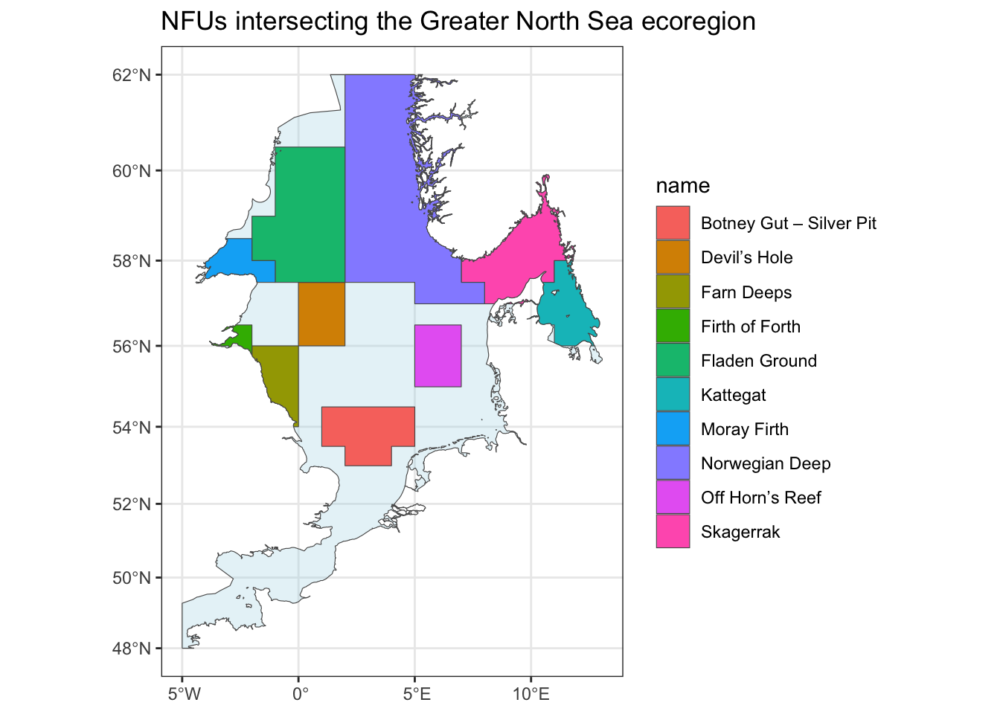
st_difference() returns the part of the first geometry that does not overlap with the second — spatial “A minus B”.
# Parts of the Greater North Sea that are NOT covered by any NFU
north_sea_no_nfu <- st_difference(north_sea, st_union(nfu))
ggplot() +
geom_sf(data = north_sea, fill = "grey90") +
geom_sf(data = north_sea_no_nfu, fill = "red", alpha = 0.5) +
theme_bw() +
labs(title = "Parts of the Greater North Sea not covered by any NFU")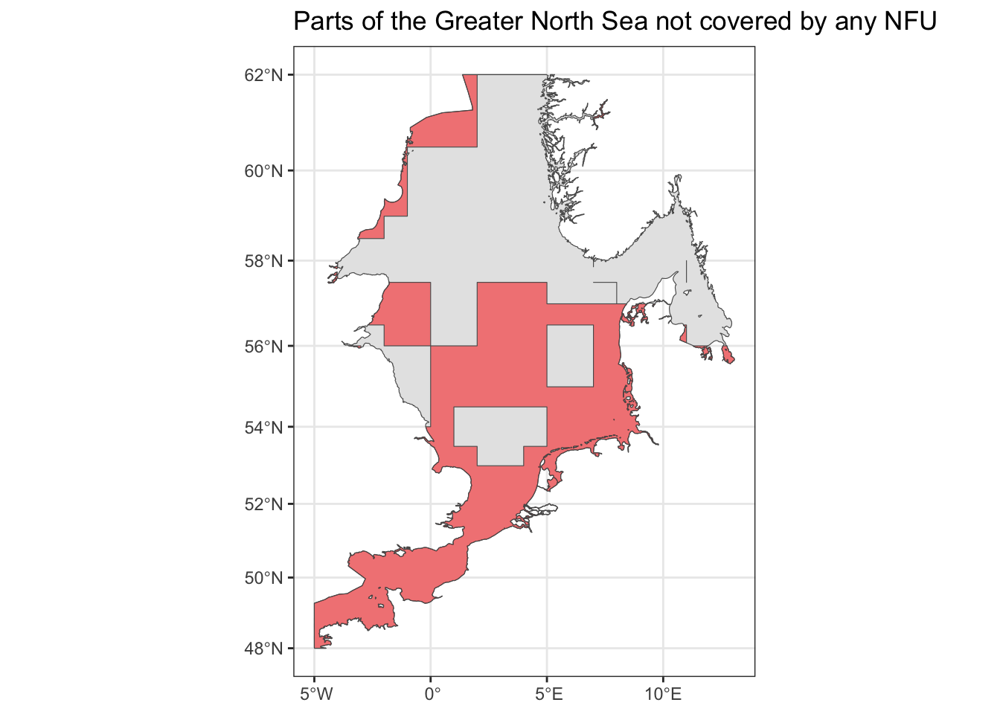
st_union() combines geometries, dissolving internal boundaries. Applied to a whole layer it returns a single merged polygon.
# Dissolve all NFUs into a single polygon
nfu_dissolved <- st_union(nfu)
ggplot() +
geom_sf(data = nfu_dissolved, fill = "lightgreen") +
theme_bw() +
labs(title = "All NFUs dissolved into one polygon")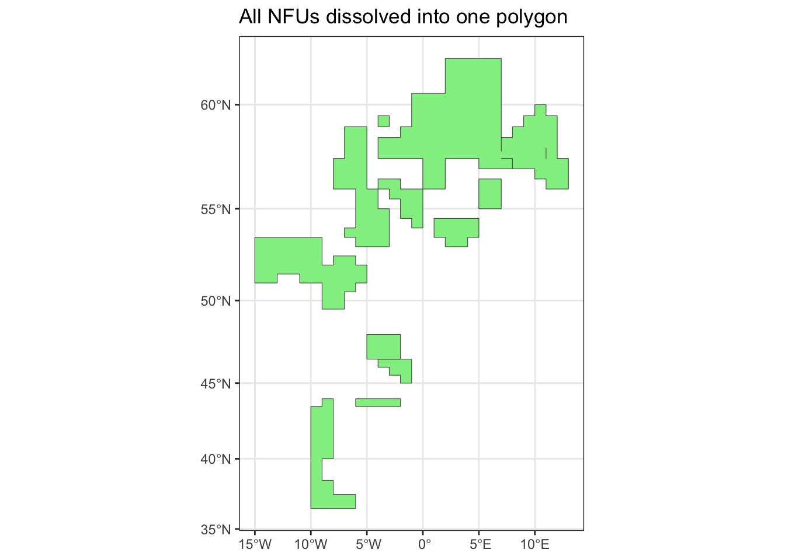
st_sym_difference() returns everything that is in either A or B but not in both — the spatial “XOR”.
NoteA note on CRS in set operations
Both objects in a binary set operation must share the same CRS. sf will throw an error if they do not. Always check with st_crs(a) == st_crs(b) or transform one to match the other before proceeding.
Simplification
Complex geometries with many vertices are slow to plot, slow to process, and large on disk. Simplification reduces the number of vertices while preserving the overall shape.
st_simplify() uses the Douglas-Peucker algorithm. The dTolerance argument sets the maximum allowable deviation from the original shape in CRS units (metres for projected data).
helcom <- read_sf("./data/helcom.gpkg") |>
st_transform(3395)
helcom_simple <- st_simplify(helcom, dTolerance = 5000) # 5 km tolerance
# Compare sizes
format(object.size(helcom), units = "Kb")[1] "1466.5 Kb"format(object.size(helcom_simple), units = "Kb")[1] "82.9 Kb"p1 <- ggplot() + geom_sf(data = helcom) + labs(title = "Original") + theme_bw()
p2 <- ggplot() + geom_sf(data = helcom_simple) + labs(title = "Simplified (5 km)") + theme_bw()
library(patchwork)
p1 + p2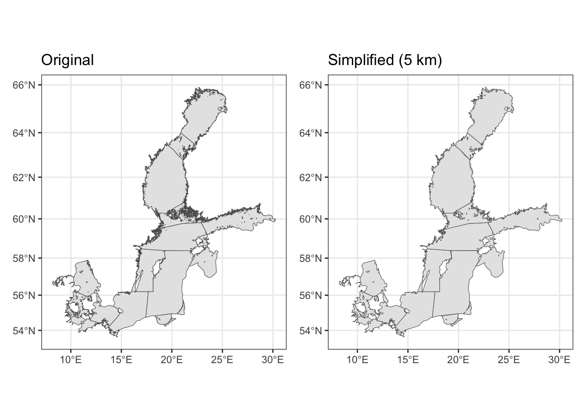
The rmapshaper package offers ms_simplify(), which uses the Visvalingam-Whyatt algorithm. This often produces cleaner results than Douglas-Peucker for geographic data, particularly for coastlines, as it avoids the “spiking” artifacts that st_simplify() can introduce at high levels of simplification.
library(rmapshaper)
helcom_ms <- ms_simplify(helcom, keep = 0.05) # Keep 5% of vertices
ggplot() + geom_sf(data = helcom_ms) 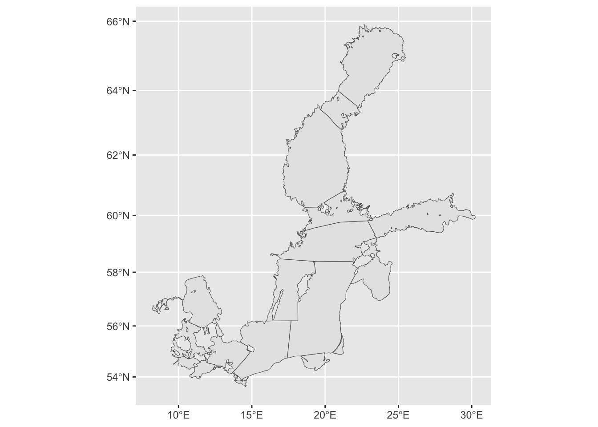
Measurements
Area and length
st_area() returns the area of polygon geometries, and st_length() returns the length of linestring geometries. Results are returned as units objects with their measurement unit attached, preventing unit confusion.
areas <- st_area(nfu)
areas # In square metres (the unit of the CRS)Units: [m^2]
[1] 12097265284 70529205689 101515726451 43665187421 52789217861
[6] 83897170656 182225854980 41084273347 109930365725 77625018558
[11] 39711206899 81904483984 53266972071 25500316209 33494096919
[16] 89343995677 46822981830 15399272037 224243874610 30901019019
[21] 34189728313 587794324640 65924335674 67677150967 101975539823
[26] 104801209635 75669588860 239994539247 33245051334 58274175242# Convert to km²
units::set_units(areas, km^2)Units: [km^2]
[1] 12097.27 70529.21 101515.73 43665.19 52789.22 83897.17 182225.85
[8] 41084.27 109930.37 77625.02 39711.21 81904.48 53266.97 25500.32
[15] 33494.10 89344.00 46822.98 15399.27 224243.87 30901.02 34189.73
[22] 587794.32 65924.34 67677.15 101975.54 104801.21 75669.59 239994.54
[29] 33245.05 58274.18# Polygons have no meaningful length; linestrings do
st_length(nfu) # Returns 0 or NA for polygonsUnits: [m]
[1] 0 0 0 0 0 0 0 0 0 0 0 0 0 0 0 0 0 0 0 0 0 0 0 0 0 0 0 0 0 0st_length(nfu_lines) # Returns length in metres for linestringsUnits: [m]
[1] 439982.1 1078852.6 1275871.1 837529.0 1201254.6 1423893.6 1797728.5
[8] 814344.3 1832675.5 1366190.1 802009.8 1158423.9 1144988.3 751134.1
[15] 746160.6 1462641.2 865896.0 583612.0 2390085.9 722866.5 1044121.7
[22] 3530082.2 1037486.3 1053232.2 1484089.6 1454082.0 1220079.3 2186042.3
[29] 842611.4 1087293.5You can add calculated areas or lengths back as attribute columns:
nfu <- nfu %>% # Note that here we use the tidyverse pipe %>%!
mutate(area_km2 = units::set_units(st_area(.), km^2))Distance
st_distance() returns a matrix of pairwise distances between two sets of geometries. Rows correspond to features in the first object, columns to features in the second. Results are units objects.
set.seed(100)
poly <- nfu[1:3, ]
pts_a <- st_sample(poly, 5) |> st_as_sf() |> mutate(lab = 1:5)
pts_b <- st_sample(poly, 2) |> st_as_sf()
# All pairwise distances between pts_a and pts_b
st_distance(pts_a, pts_b)Units: [m]
[,1] [,2]
[1,] 390038.79 215873.96
[2,] 271325.80 132231.48
[3,] 83469.62 91539.58
[4,] 413750.94 253766.06
[5,] 313926.48 141064.78# Distance from each point to each polygon
# Note: distance is 0 when the point is inside the polygon
st_distance(pts_a, poly)Units: [m]
[,1] [,2] [,3]
[1,] 514192.8 99476.91 0.0
[2,] 357723.2 13305.68 0.0
[3,] 227285.5 0.00 184031.4
[4,] 503294.0 154725.62 0.0
[5,] 430993.2 41763.01 0.0ggplot() +
geom_sf(data = poly, aes(fill = name), alpha = 0.3) +
geom_sf(data = pts_a) +
geom_sf_text(data = pts_a, aes(label = lab), nudge_x = 20000) +
theme_bw()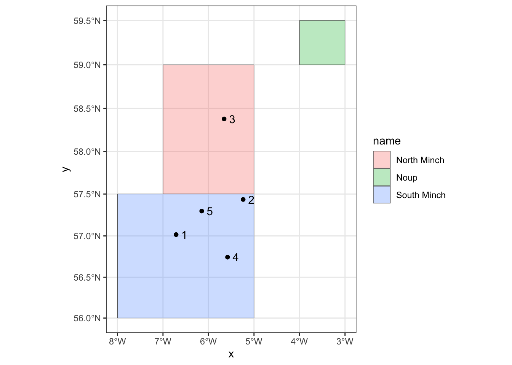
For nearest-neighbour distances — the distance from each feature in one layer to its closest feature in another — use the by_element argument together with st_nearest_feature():
# Index of the nearest polygon for each point in pts_a
nearest_idx <- st_nearest_feature(pts_a, poly)
# Distance from each point to its nearest polygon
st_distance(pts_a, poly[nearest_idx, ], by_element = TRUE)Units: [m]
[1] 0 0 0 0 0Aggregation
Aggregation in sf combines features by a grouping variable, summarising both attributes and geometries. This is done with group_by() and summarise(), exactly as in dplyr, with sf handling the geometry automatically.
Dissolving polygon boundaries
A common task is merging polygons that share a grouping variable, dissolving the internal boundaries between them.
ices_er <- read_sf("./data/ices_ecoregions.gpkg") |>
st_transform(3395) |>
mutate(zone = case_when(
ecoregion %in% c("Arctic Ocean", "Barents Sea") ~ "Arctic & Subarctic",
ecoregion %in% c("Bay of Biscay and the Iberian Coast",
"Mediterranean Sea", "Black Sea") ~ "Mediterranean & Black Sea",
TRUE ~ "North Atlantic"
))
ices_zones <- ices_er |>
group_by(zone) |>
summarise(area_km2 = sum(area_km2)) |> # do_union = TRUE is the default
st_transform(4326) # For easier plotting
ggplot() +
geom_sf(data = ices_zones, aes(fill = zone), alpha = 0.7) +
coord_sf(ylim=c(30,85)) +
theme_bw()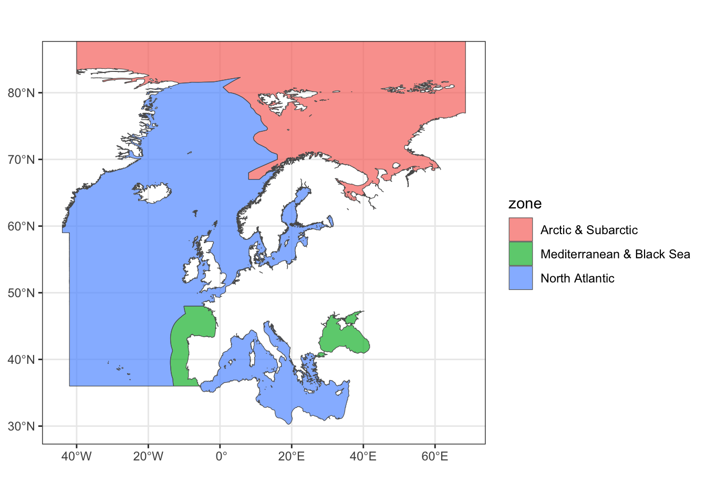
Note
The default do_union = TRUE in summarise() uses st_union() to dissolve internal boundaries between merged polygons. This is what you want for polygon aggregation. Using do_union = FALSE would keep internal boundaries and can produce invalid geometries.
Combining sf objects by row
To stack two sf objects with the same columns and CRS, use bind_rows() (tidyverse) or rbind() (base R):
sm_ices_er <- ices_er |> filter(area_km2 < 500)
lg_ices_er <- ices_er |> filter(area_km2 >= 500)
all_ices_er <- bind_rows(sm_ices_er, lg_ices_er)
nrow(all_ices_er) == nrow(ices_er) # Should be TRUE[1] TRUEAttribute-geometry relationships
When we change geometries, we need to think carefully about whether the associated attributes still make sense. This is one of the subtler aspects of working with spatial data.
Consider a worked example:
- We have a polygon representing a survey area, with an attribute
total_codgiving the total cod caught in that area. - We split the polygon into three sub-areas by depth zone.
- sf copies the
total_codattribute to all three sub-polygons — but now each one claims the entire survey total. The attribute is no longer meaningful.
The sf package formalises this through attribute-geometry relationships (AGR):
| AGR type | Meaning | Examples |
|---|---|---|
constant |
The attribute is the same everywhere within the geometry | Bottom type, depth class |
aggregate |
The attribute is a summary over the whole geometry | Total abundance, mean temperature |
identity |
The attribute uniquely identifies the entire geometry | EEZ name, ecoregion name |
By default sf does not know which type applies to each column, and warns you when doing operations that might make attributes inconsistent. You can suppress these warnings by setting the AGR explicitly:
st_agr(ices_er) # Currently NA for all columnsecoregion area_km2 zone
<NA> <NA> <NA>
Levels: constant aggregate identityst_agr(ices_er) <- c(
ecoregion = "identity",
area_km2 = "aggregate",
zone = "constant"
)
st_agr(ices_er) # Now setecoregion area_km2 zone
identity aggregate constant
Levels: constant aggregate identity# sf now knows that 'ecoregion' identifies the whole polygon,
# so it won't carry it over unchanged to a sub-geometry
ices_ct <- st_centroid(ices_er)
st_agr(ices_ct) # 'identity' becomes NA for the centroidecoregion area_km2 zone
constant aggregate constant
Levels: constant aggregate identityIn practice, setting AGR is more useful for suppressing false-positive warnings than for catching real errors — but understanding the concept helps you reason about whether your attribute values still make sense after geometric operations.
Summary
| Task | Function |
|---|---|
| Check geometry validity | st_is_valid(x) |
| Fix invalid geometries | st_make_valid(x) |
| Sample random points | st_sample(x, size, type) |
| Centroid | st_centroid(x) |
| Point guaranteed inside polygon | st_point_on_surface(x) |
| Buffer | st_buffer(x, dist) |
| Convex hull | st_convex_hull(st_union(x)) |
| Concave hull | st_concave_hull(st_union(x), ratio) |
| Rectangular or hex grid | st_make_grid(x, n, square) |
| Bounding box as polygon | st_as_sfc(st_bbox(x)) |
| Convert geometry type | st_cast(x, "TYPE") |
| Intersection (A AND B) | st_intersection(a, b) |
| Difference (A minus B) | st_difference(a, b) |
| Union (dissolve boundaries) | st_union(x) |
| Symmetric difference (XOR) | st_sym_difference(a, b) |
| Simplify geometry | st_simplify(x, dTolerance) |
| Area | st_area(x) |
| Length | st_length(x) |
| Distance matrix | st_distance(a, b) |
| Nearest feature index | st_nearest_feature(a, b) |
| Dissolve polygons by group | group_by() |> summarise() |
| Check/set AGR | st_agr(x), st_agr(x) <- c(...) |